컴퓨터를 잘 몰라도 괜찮아요. 이 페이지를 순서대로 따라 하시면
클로드 데스크탑 설치부터 클로드 코드로 첫 작업을 맡기는 것까지 할 수 있어요.
클로드 데스크탑 안에는 '채팅 및 Cowork'와 'Code' 두 가지 메뉴가 있어요.
이 중 'Code' 메뉴(클로드 코드)는 유료 요금제(Pro 이상)를 사용해야 켜져요. 무료 요금제라면 Code 메뉴가 보이지 않거나 눌리지 않을 수 있으니, 먼저 회사에서 안내받은 계정이 유료 요금제인지 확인해 주세요.
1단계(Git 준비)만 윈도우/맥에 따라 다르고, 나머지 단계는 똑같아요. 내 컴퓨터에 맞는 1단계만 따라 하신 다음 이어서 진행하세요.
깃(Git)은 클로드 코드가 작업 내용을 안전하게 저장하고 관리하는 데 필요한 프로그램이에요. 클로드 데스크탑을 쓰려면 먼저 설치해야 해요.
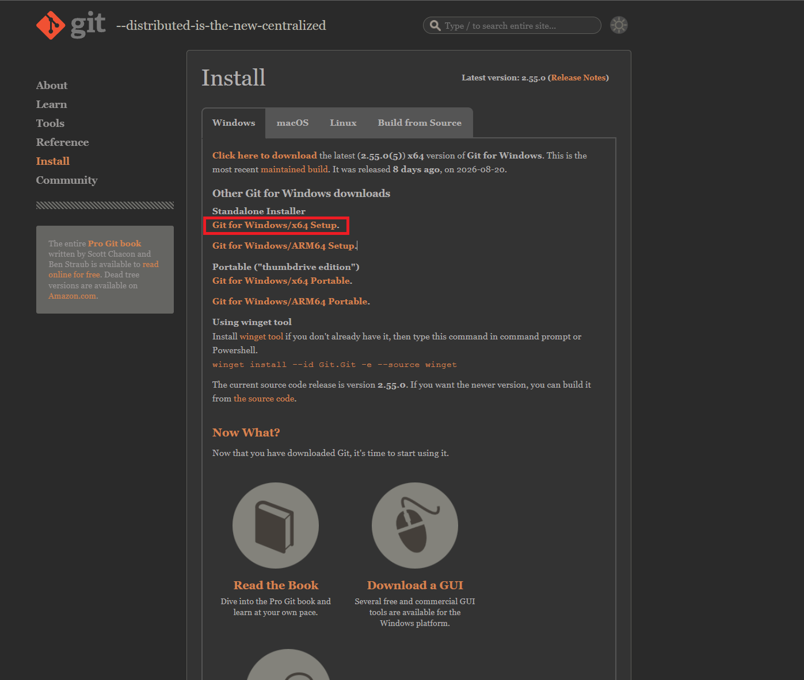
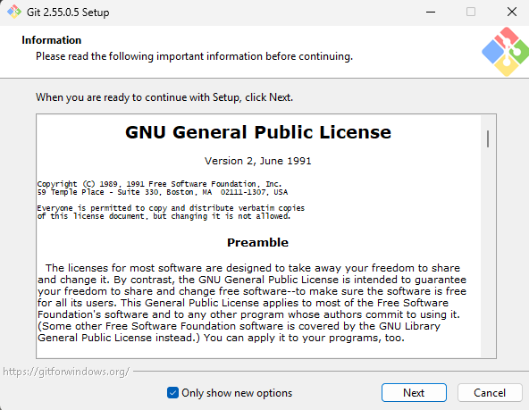
맥 컴퓨터에는 대부분 깃(Git)이 이미 설치되어 있어서 따로 설치하지 않아도 되는 경우가 많아요. 혹시 실행 중 깃이 없다는 안내가 나오면, 화면에 뜨는 설치 안내를 그대로 따라 설치해 주시면 돼요.
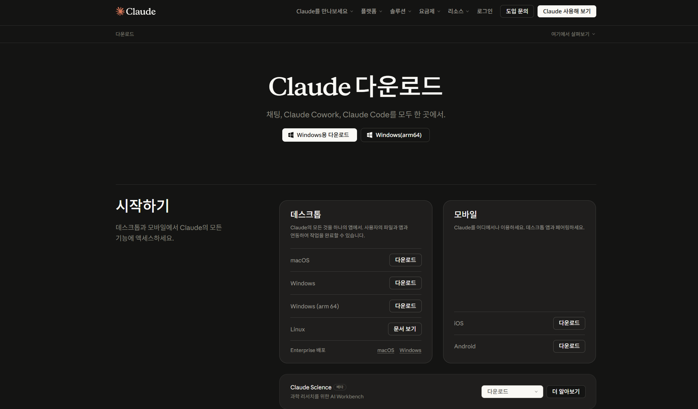
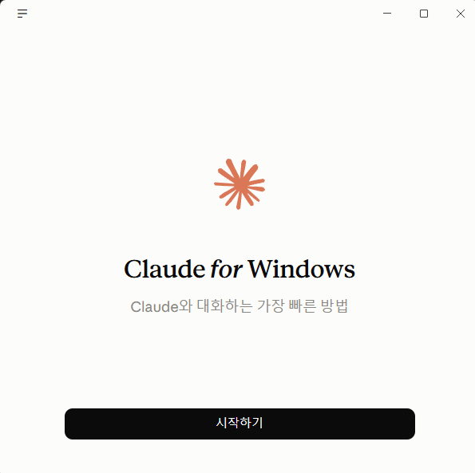
로그인을 하면 왼쪽 위에 두 개의 메뉴가 보여요.
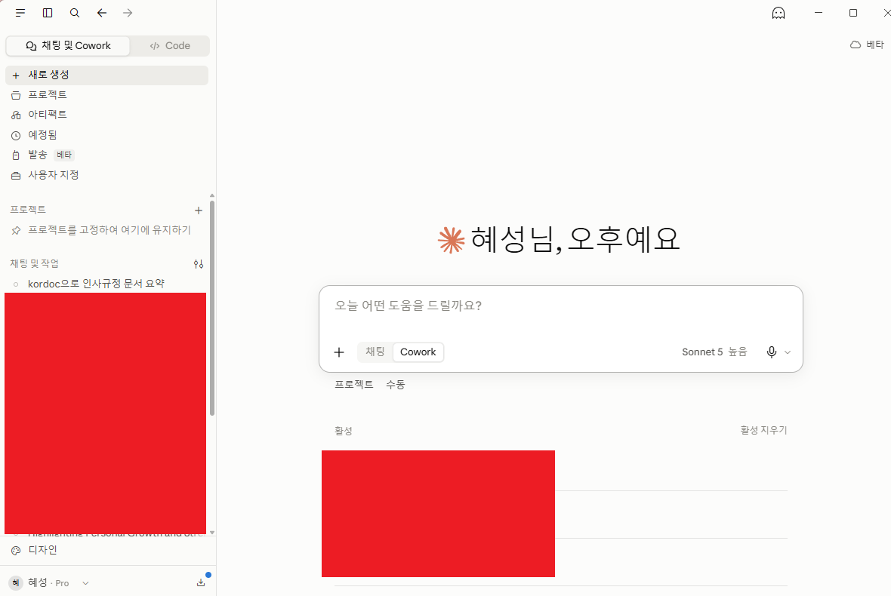
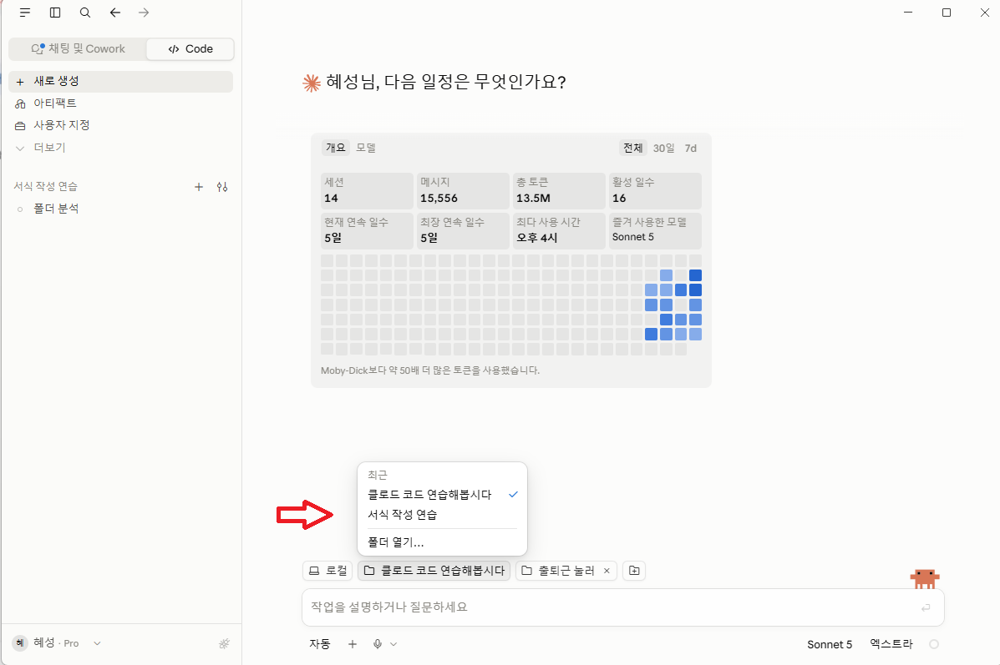
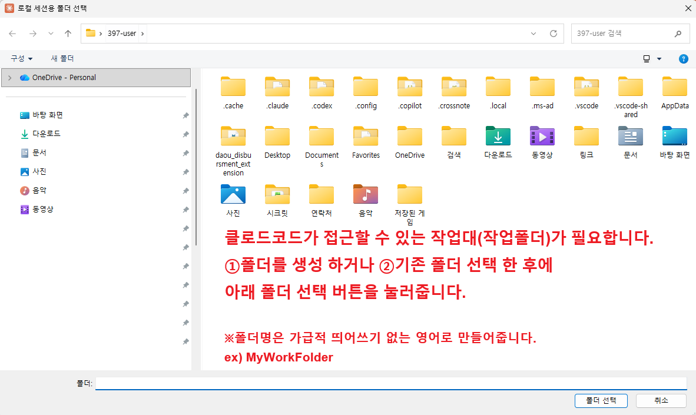
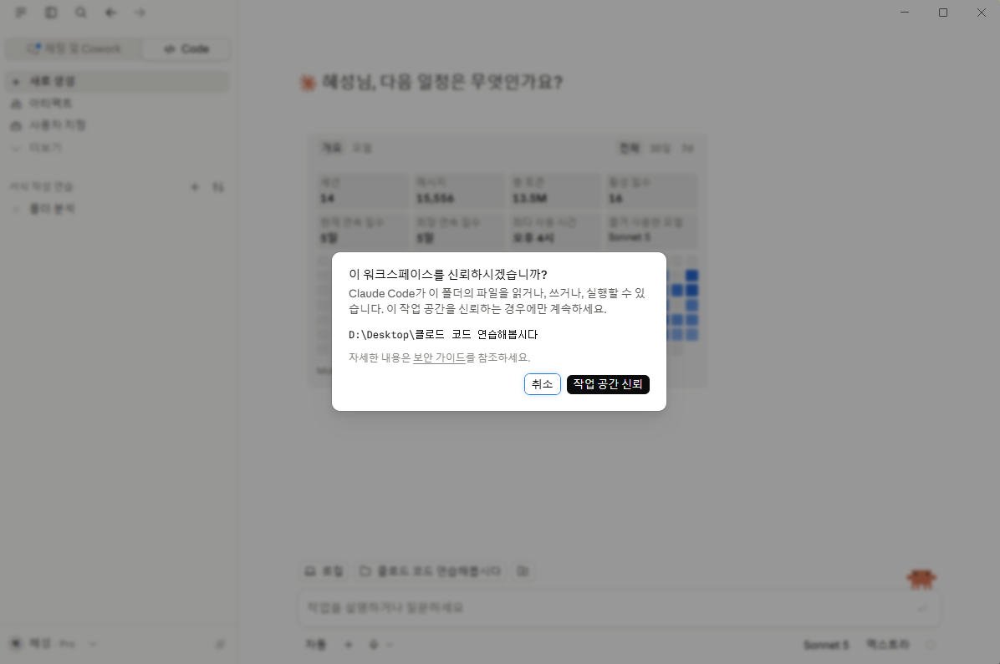
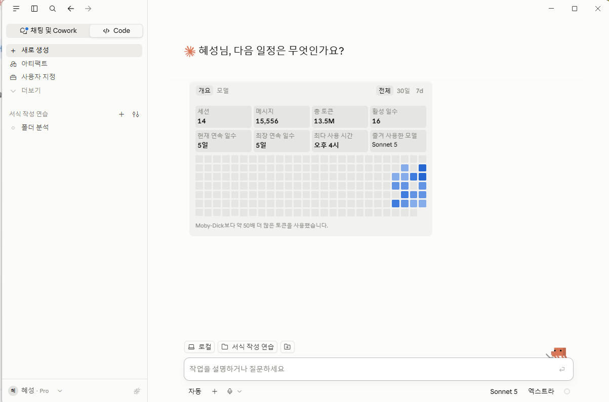
모델은 클로드의 종류예요. 일상적인 작업은 'Sonnet 5'면 충분해요. 기본값 그대로 두고 시작해도 괜찮아요.
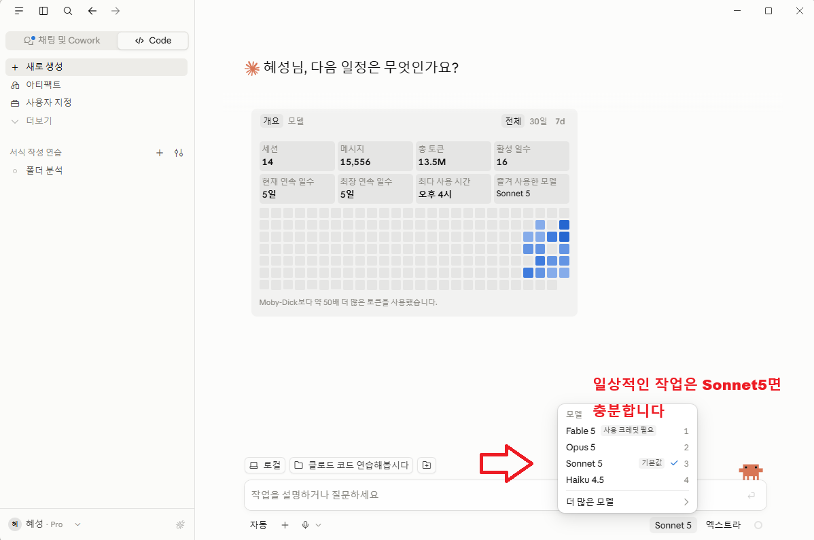
노력은 '더 빠르게'와 '더 스마트하게' 사이에서 정하는 설정이에요. 어렵게 생각하지 말고 기본값 그대로 두어도 돼요.
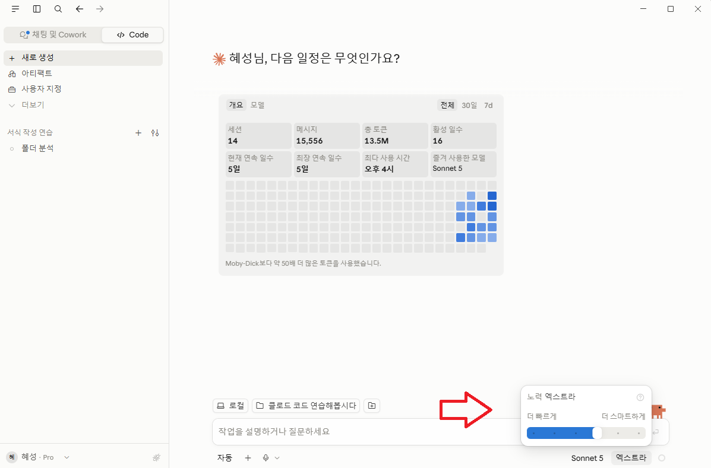
화면 아래쪽 '자동' 버튼을 누르면, 클로드가 작업할 때 얼마나 자유롭게 움직일지 아래처럼 고를 수 있어요.
그 밖에 수동(변경하기 전에 항상 확인), 편집 자동 수락(모든 파일 편집을 자동으로 승인), 계획(변경하기 전에 계획부터 만들기) 모드도 있어요. 필요할 때 바꿔서 써보세요.
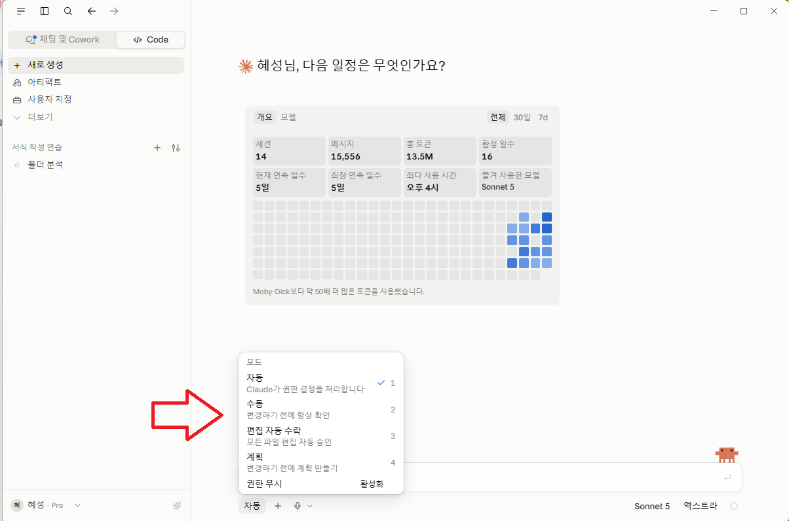
옆에 있는 버튼을 누르면 클로드가 작업하는 과정을 화면에 어떻게 보여줄지 고를 수 있어요. 처음에는 '요약 모드'를 선택하면 지금 어떤 작업이 진행되고 있는지 한눈에 파악하기 좋아요.
이제 실제로 클로드에게 일을 시켜볼 차례예요. 화면 아래 입력창에 하고 싶은 작업을 문장으로 적으면 돼요. 어렵게 생각하지 말고, 사람에게 부탁하듯이 적으면 돼요.
입력 후 엔터를 누르면 클로드가 작업을 시작하고, 화면에 진행 상황이 나타나요.
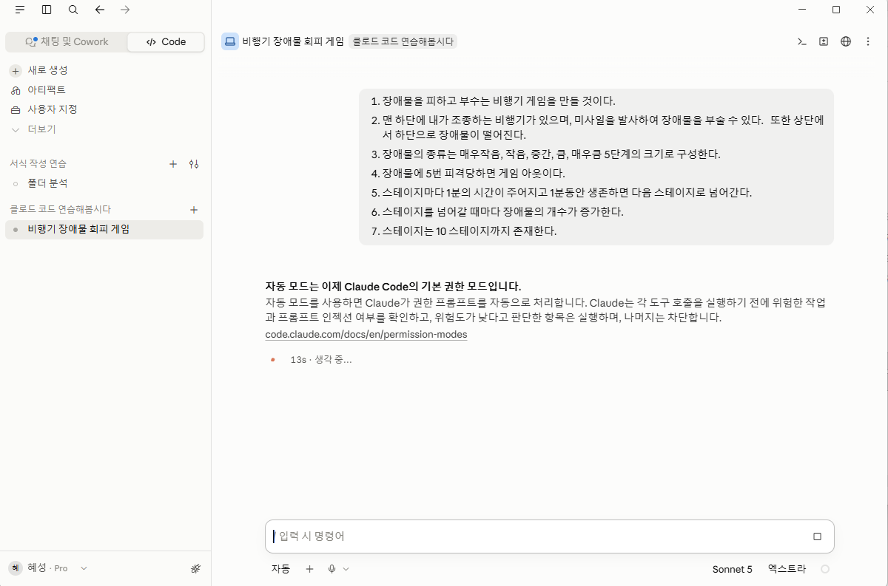
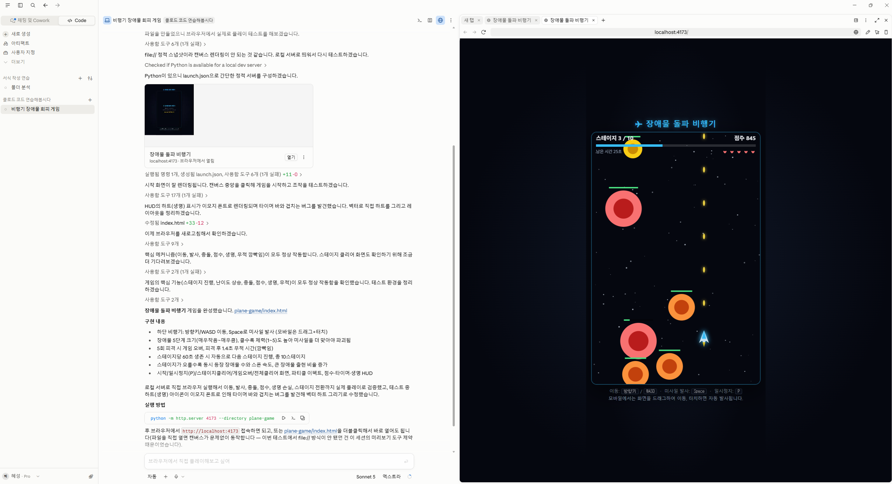
화면 오른쪽 아래에 있는 동그라미 아이콘을 누르면 지금까지 얼마나 사용했는지 확인할 수 있어요.
'자세한 내역 보기'를 누르면 더 자세한 사용 기록도 볼 수 있어요.
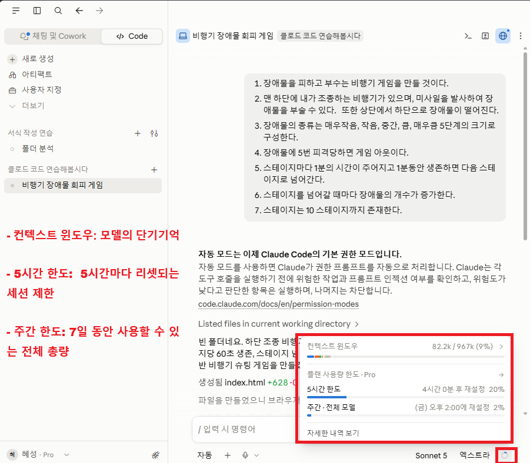
여기까지 따라 하셨다면 클로드 데스크탑 설치부터 클로드 코드로 첫 작업을 맡기는 것까지 모두 해보신 거예요. 사용하다가 막히는 부분이 있으면 사내 담당자에게 편하게 문의해 주세요.